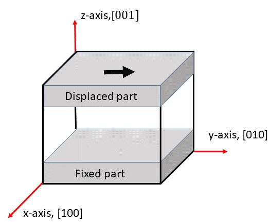

せん断変形を行う はじめに
この講座からは少しずつ材料力学的な内容になっていくが、それほど専門的な内容ではないので大学の教養物理学程度の知識があれば問題ないであろう。Fig. 1: せん断変形MDを行う方法 せん断変形MDの実行
このMDを行うための大まかな手続きの流れを述べると、まず鉄の結晶を絶対0度で構造緩和させ、そしてある有限温度にてアニールする。このコースを最初から順番に学んできた人は、これらを行う方法はすでに学んだはずだ。その後、上図のように試料の下部を固定し、図の黒い矢印で示されたように上部を一定の速度で移動させることによってせん断変形を実現することができる。このMDを実行するためのスクリプトがscript ディレクトリの中のbccFe_shear.lcm である。以下のコマンドラインを標準入力に入れることによりこのMDが実行される。
$work> lmp_serial -v x_lattice 25 -v y_lattice 25 -v z_lattice 25 -v max_step 5000
-in script/bccFe_shear.lcm
上のコマンドラインの-vはすでに紹介した-inと同じようにフラグの一種である。この-vフラグを使うことによって実行前にLAMMPSで使われる変数を定義することができる。この方法は１つのスクリプトで異なったケースを計算できる便利な方法なのでぜひ覚えておいて欲しい。以下で改めて説明するが、このケースではボックスのサイズが25a （a は格子定数）、およびせん断変形の持続時間長さ(5000 fs)が定義されている。work ディレクトリにbccFe_shear_*.out という形式のファイルが多数できる。ただし、"*" の部分は時刻に関する情報（すなわち計算ステップ数）が入る。これのどれかをOVITOで読み込めば、この形式のファイルは全て読み込まれる。前回と同様に動画を実行すればせん断変形の様子を観察することができる。下にxz 面で見た動画を置いておくので自分のと見比べて欲しい。
Your browser does not support the video tag.
Video 1: せん断変形MDから得られた動画
スクリプトの説明
基本結晶を作る
さて、いつものようにスクリプトを見ていこう。まずは最初のブロックを表示する。
# variable x_lattice equal 25
# variable y_lattice equal 25
# variable z_lattice equal 25
# variable max_step equal 5000
最初の4行はコメント文でLAMMPSの実行には何も影響を与えない。ここでコメントアウトされたvariableコマンドの変数は上記のコマンドラインにおける-vフラグで定義され、値が与えられる。そのことを忘れないようにここに記述した。すなわち上の実行コマンドのように-vフラグ使うということは、上記４つのコメント文をアンコメントしてこれら4変数を定義したことと等価になる。
units metal
boundary p p p
atom_style atomic
lattice bcc 2.83 orient x 1 0 0 orient y 0 1 0 orient z 0 0 1
region sim_box block 0 ${x_lattice} 0 ${y_lattice} 0 ${z_lattice} units lattice
create_box 1 sim_box
create_atoms 1 box
この部分はすでに構造緩和を行う で説明したスクリプトの最初の部分とほぼ同じなので、改めて説明の必要はないはずだ。違うところはregionコマンドにおいて変数が使われていることだけである。LAMMPSのスクリプトでは、${a} という記述は変数a を参照する時に使われる。よって、このregionコマンドは、x_lattice などの変数が代入されて実行されたことになる。（厳密にはx_lattice で定義された文字列が代入されただけだが、結果的に数値が代入されたことと等価なので、今そのことを気にする必要はない。）このように-vフラグを使えば、LAMMPSを実行させるごとにボックスの大きさを変えたりでき、1つのスクリプトを柔軟に運用できる。上下の面を“削る”
variable boundary_width equal 3
variable vacuum_high equal ${z_lattice}-${boundary_width}
region lower_vacuum block INF INF INF INF INF ${boundary_width} units lattice
region upper_vacuum block INF INF INF INF ${vacuum_high} INF units lattice
delete_atoms region lower_vacuum
delete_atoms region upper_vacuum
さてこの部分はちょっと複雑なので以下をじっくり読んで欲しい。1つ前のブロックにおけるboundaryコマンドでは、3方向で周期的境界条件が指定されている。これは上の図の上下の面が連続していることを意味している。よってこのままで上の図のようなせん断変形を行うと上の面の動きに下の面が引きずられてしまう。これを避けるためには、上下の面を乖離させる必要がある。そのため、上下それぞれの面を少しずつ削ることにする。それを行なっているのがこのブロックである。variableコマンドではその削り幅boundary_width を"3" と定義した。後のコマンドでわかるが数値の単位は格子定数である。よって材料サンプルの上下の面は格子定数の6倍の距離だけ離されることになりお互いの影響はなくなる。次のvariableコマンドでは削られたあとの新たな上面の位置が定義されている。regionコマンドは、削られる上下の領域、lower_vacuum とupper_vacuum を定義している。すでに学んだがblockは領域の種類を表すキーワードでここでは直方体の空間で、続く6つの値によって具体的な領域が定義される。INF もすでに出てきたが限界の値をとることを意味している。それに続く、units latticeではregionコマンドで使われる数値の単位を格子定数に指定している。これは上で意図した通りである。delete_atoms regionコマンドは指定された領域の中の全原子を削除するコマンドで、これで上下の面を少しずつ削ることができる。強制的に動かす部分を定義
variable lower_board equal ${boundary_width}+${boundary_width}
variable upper_board equal ${vacuum_high}-${boundary_width}
region lower block INF INF INF INF INF ${lower_board} units lattice
region upper block INF INF INF INF ${lower_board} INF units lattice
group lower region lower
group upper region upper
group boundary union lower upper
group mobile subtract all boundary
このコマンドブロックではFig. 1 のグレーの部分、すなわち固定する底板と移動させる天板を定義する。variableコマンドは底板の一番上の位置と天板の一番下の位置を定義している。regionコマンドで定義する。この領域には上で作った真空の部分も含まれるが、もうそこには原子はないのでこの後の処理において気にする必要なない。group ... regionコマンドはregionの後に記述された領域（ここではlower とupper ）内にある全ての原子をグループ化するコマンドである。group ... unionコマンドはunionの後に記述された複数のクループを足し合わせて新たなグループを作るコマンドである。ここで底板と天板のグループを足し合わせて新たにboundary というグループを作った。group ... subtractコマンドはgroup ... unionの逆でグループの引き算である。ここでは全体ボックス内の全ての原子all グループからboundary グループに属する原子を削除し、残った原子グループを新たにmobile と定義する。regionとgroupは混同しやすいが、regionは空間、groupは原子の集まりと覚えておこう。
pair_style eam/fs
pair_coeff * * ./potentials/Fe_mm.eam.fs Fe
neigh_modify every 1 delay 0 check yes
最初の2行は鉄の原子間ポテンシャルの定義であり、構造緩和を行う のところで説明したので繰り返さない。neigh_modifyコマンドであるが、１つの講座で学習することが多くならないようにこれまでこのコマンドの説明を避けてきた。この講座ではきちんと説明しよう。units metalが選ばれた場合のディフォルトはneighbor 2.0 binとなる。このコマンドの意味するところは、厚さ2.0 Angstromのskinを用いる。 また、ここで記述されたbin はネイバーリストを作るアルゴリズの種類であり詳しいことは説明しないが、興味のある受講者はSteve Plimpton氏による発表スライド のp13を参照して欲しい。neighbor_modifyコマンドの説明にもどろう。ここでは、every "n" delay "m"は新しいNeighborリストがビルドされてからm ステップ数の後、n ステップ数の度にリストが更新されることを意味している。ただし、check yesはある条件を満したときのみリストを更新することを指定している。この条件とは原子の移動距離がskinに達した場合である。ディフォルトはevery 1 delay 0 check yesである。よって元々このコマンドラインは不要なのだが、ここに書いておいたのはこれらのパラメータを変えることによって計算時間を短縮できる可能性があるからだ。例えば、原子が激しく動いていない場合にはリスト更新を間引きしてもよいし、逆に原子が激しく動く場合はいちいちチェックする計算時間がもったいないのでcheck noがいいかもしれない。構造緩和を行う
fix 1 all box/relax iso 0.0 vmax 0.001
thermo 200
thermo_style custom step pe lx ly lz press
min_style cg
minimize 1.e-25 1.0e-12 10000 50000
unfix 1
fix ... box/relaxコマンドは体積緩和を行うためのコマンドで、すでに習った。thermoコマンドは系の熱力学的変数を計算するインターバルを指定するコマンドであり、200計算ステップごとにそれらの変数が計算されその結果が標準出力に出力されることになる。thermo_style customコマンドはその標準出力への出力フォーマットを定義する。この例ではstep （シミュレーションステップ）、pe （全ポテンシャルエネルギー）、lx ly lz （ボックスの3方向のサイズ）、press （圧力）が表示されるようになる。min_styleコマンドとminimizeコマンドは構造緩和を行う のところで出てきたので説明を繰り返さない。unfixコマンドもすでに学んだ。これはfixコマンドが使われてその役目を終えた時、それを無効化する手続きである。ここでは構造緩和の計算が終了したのでこのブロック先頭のfix ... box/rescaleコマンドを無効化している。アニーリングを行う
variable set_temp equal 10.
velocity mobile create ${set_temp} 1582775
fix 1 all nve
fix 2 boundary setforce 0.0 0.0 0.0
fix 3 mobile temp/rescale 10 ${set_temp} ${set_temp} 0.1 1.0
reset_timestep 0
run 1000
このスクリプト部分では底板と天板に挟まれたmobile グループに属する原子群を設定温度でアニールする。variableコマンドではset_temp という変数を定義し"10"を代入している。velocity ... createコマンドはアニーリングを行う ですでに述べたが温度を設定するためのコマンドである。ここではmobile グループの原子群にset_temp で定義された温度（K）を入れている。mobile グループは底板と天板に挟まれた場所にある原子群である。fix ... nveコマンドは系全体（すなわちall グループ）を原子数一定、体積一定、エネルギー一定で（すなわちミクノカノニカルアンサンブルで）時間積分を行うことを指定している。お分かりと思うが、ここでは計算法を指定しただけで、実際の計算はまだ始まらない。fix ... setforceコマンドは原子間力を強制的に与えるためのコマンドで底板と天板を合わせたboundary グループでは原子間力が消滅する。すでに述べたが、これらの部分の原子の運動は原子間ポテンシャルによって決まるのではなく強制的に固定したり動かしたりする部分なのでこのような設定にしておく。材料変形のMDでは、このように強制的に原子群を固定したり動かしたりする場面が出てくるが、その時このfix ... setforceコマンドが大いに役に立つだろう。ここでfixコマンドの識別子が"2" になっていることに注目しよう。fixコマンドは複数実行することができ、識別子によって区別される。無論、同じ識別子を持つ2つ以上のfixコマンドを同時に実行することはできない。fix ... temp/rescaleコマンドはアニーリングを行う で既出であるので詳しい説明はしないが、温度調整がmobile グループだけになっている。これは原子間ポテンシャルによって有限温度で時間発展するのがmobile グループだけだからである。reset_timestepコマンドもすでに説明したが、シミュレーションの時間ステップを初期化している。実は何もしなくても最初は時刻"0" に初期化されるので、このコマンドは必要ないのだが、スクリプトの意図を明確にするために書いておいても良い。runコマンドで実行する。ここでは計算の負荷を減らすために1000ステップ（1 ps）の長さにしてあるが、本来ならこの100倍の100 ps程度にした方が良いだろう。これでmobile グループの中の原子がアニーリングされることになる。ただ、fix ... setforceコマンドによってFig. 1 の上下のグループは動かないので、boundary グループ原子がmobile グループの中に入り込んだり、その逆の現象も起きない。せん断変形を行う
velocity upper set 0.1 0. 0.
reset_timestep 0
dump 1 all custom 200 bccFe_shear_*.out id type xs ys zs
run ${max_step}
これがスクリプトの最後の部分である。まずvelocity ... setコマンドだが、前出のvelocity ... createととは異なって指定されたグループに一様な速度を与えるコマンドである。最初の引数のupper は速度が与えられるグループで、Fig. 1 の天板に属する原子群である。setに続く3つの数字はそれぞれ(x,y,z) 方向の速度である。速度の単位だが、スクリプトの最初でunits metalが宣言されたいるのでAngstrom/psになる。reset_timestepコマンドはすでに説明した。この場合は時刻はすでに1000ステップ（1 ps）まで進んでいるので"0" にしたい場合は省略することはできない。dumpコマンドもこれまでの説明からほぼ理解できるだろう。これまでと違う点はファイル名に"_*" という部分を加えたことである。これまではdumpコマンドで出力されたファイルは1つのファイルであったが、この方法だと1つのファイルのサイズが大きくなりすぎる場合がある。今回のようにすると、上で見たようにbccFe_shear_0.out から200ステップ刻みで複数のファイルができることになり、1個のファイルが大きくなるのを防ぐことができる。runコマンドで上の標準入力へのコマンドラインで指定された時間長さだけシミュレーションが行われる。これでスクリプトの説明は終わりだ。このスクリプトに限らないが、おおよその内容がわかったらパラメータを変化させて様々なケースを行なうと理解が進むだろう。
目次へ 前はアニーリングを行う 次は引っ張り変形を行う